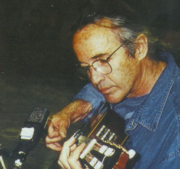

Четверть века назад журнал "Rolling Stone" напечатал следующую похвалу, которая до сих пор верна: "Рай Кудер (Ry Cooder) - это самый прекрасный, самый выразительный из всех живущих исполнителей на слайд-гитаре". Среди бойцов бутылочного горлышка он выделяется как тонкий стилист и первый интерпретатор сотен американских фопк-нитей, бесстрашно вплетающий нестройную гавайскую гитару юкелеле и аккордеон в стиле "текс-мекс" в, скажем, гармонии госпел. Сделав первый сольный выпад в 1970 году, к началу 80-х он по крупицам собрал образцы деревенского блюза, уличного соул, пыльных баллад, каллипсо и других фолк-самородков и перелил их в кипящий жизнью сплав осовремененного американского водевиля. И как бы американцы ни презирали его мексиканских музыкантов в полиэстеровых костюмах, вся Европа падала в обморок перед кабацким юмором Кудера и способностью его разноперого ансамбля заставить тысячные толпы вопить, потеть и даже плакать - на протяжении каких-то пары часов.Но не все и не всегда было так безоблачно. Хотя концерты Рая Кудера стали канонами, они высасывали из него деньги. Десятый альбом "Slide Area" 1982 года показал, что кудеровский стиль становится трафаретом, а плохие отзывы критики и мизерные тиражи лишь дополнили разочарование артиста. Он быстро свернулся, распрощался со своим ансамблем и оправился домой на участок в Санта-Монику, где прожил всю жизнь. Тогда ему было сорок. Течением его носило недолго, и в один прекрасный день Кудер очутился в кино. Оно стало его основной работой: не езди ни в какие турне по захолустьям, пластинок не пиши, не думай о промоушене, ходи каждый день в голливудскую студию - благо, недалеко - да пописывай партитуры к фильмам.
Кудер дебютировал еще в 1968 году с музыкой к фильму "Candy" компании "MGM", а чуть позже - в "Performance" режиссера Ника Роуга (Nic Roeg) 1970 года с Миком Джеггером в главной роли. Джек Ницше (Jack Nitzsche) помогал гитаристу на обеих звуковых дорожках, и именно тогда Кудер попал на запись к РОЛЛИНГ СТОУНЗ. Кино выручило, как выручает и теперь, ибо Рай так и не отделался от своей страсти к кантри-блюзу, раннему джазу, хиллбилли, гавайской, карибской, кубинской, мексиканской музыке, госпелу, рок-н-роллу и другим корневым стилям. "Девяносто процентов своих музыкальных познаний я получил на работе,- написал он в буклете к своей антологии, двойному компакт-диску "Music Of Ry Cooder".- Я благодарен судьбе за возможность разрабатывать идеи и звучания, интуитивные и исследовательские по духу. И это единственный известный мне стиль".
Несмотря на такую тягу артиста к народным, а значит, деревенским направлениям, звуки стонущих под бутылочным горлышком струн больше ассоциируются у всех с урбанистическими сюжетами. В жуткие индустриальные пейзажи фильма "Blue Collar" (Синий воротничок) как нельзя вписались слайдовые "нарезы" Кудера конца 70-х. Барабанил у него Джим Келтнер (Jim Keltner), игравший с Эриком Клэптоном, Леоном Расселлом (Leon Russell), Джоном Ленноном (John Lennon) и Джо Кокером (Jое Cocker). Тогда Кудеру удалось сохранить ядро музыкантов своего бэнда: Дэйвид Линдли (David Lindley) и другие приятели зазвучали в картине "The Long Riders" (1980), положившей начало долгого сотрудничества гитариста с режиссером Уолтером Хиллом (Walter Hill). Кудер сделал музыку к нескольким его фильмам: культовому рокабилльному боевику "Streets Of Fire" (Огненные улицы), не менее культовому, но уже блюзовому "Crossroads" (Перекресток), "Southern Comfort" (Южные утехи), "Johnny Handsome" (Красавчик Джонни), "Tresspas" (Нарушение границы), а в 90-х годах - "Geronimo: An American Legend" (Джеронимо) и последнему "Last Man Standing" (До последнего человека). Впрочем, и другие режиссеры и кинопродюсеры также желали иметь в композиторах и исполнителях Рая Кудера: "The Border" (Tony Richardson), "Alamo Bay" (Louis Malle), "Paris, Texas" (Wim Wenders), где бутылочное горлышко заставляет гитару выть, как привидение. Тем самым Рай Кудер отдал дань великому, но почти забытому тогда Блайнд Уилли Джонсону (Blind Willie Johnson). При поддержке Уолтера Хилла, Кудер вплетал инструменты со всего земного шара в свой уникальный ковер. Флейта шакуначи и корейский гонг, фисгармония и губная гармоника, банджо и саз, корнет и аккордеон - все они поровну делят обширную звуковую сцену со старыми акустическими гитарами Кудера и его электрическими гибридами. "Рай Кудер - не просто композитор в кино, гитарист, рок-певец, фолк-певец, блюзовый коллекционер или экспериментатор с музыкальными формами экзотических или малоизвестных культур,- замечает Уолтер Хилл.- Помимо этого, он великий и поразительно американский артист. В его работе выявляются повторяющиеся узоры, настроения и подходы, явно присущие только ему. Что же до киномузыки Рая, достаточно сказать, что он работает в нетрадиционной манере. Он не столько не договаривает, сколько огибает, не столько нагнетает кульминационный момент, сколько добавляет к нему атмосферы, обволакивает историю, поставляет недостающую информацию, сражается за настроение, нежели за событие".
ПУХ И ПЕРЬЯ В ХИТ-ПАРАДАХ
Рай Кудер всю жизнь был последователем музыки
американского рабочего человека - черного,
белого и желтого. Беспокойный новатор с
безграничным музыкальным любопытством, он
изучал новую музыкальную среду с каждой новой
записью или серией концертов. В один момент он
играл авангард-рок, в другой - корни блюза, затем
кантри-н-вестерн, даже джаз. Для тех, кто поспевал
за ним, Кудер освещал прошедшие незамеченными
жанры музыки с поразительным результатом. Но его
нежелание быть заклейменным и застыть в одном
стиле несколько отталкивало многих членов
музыкального сообщества. Хотя Кудера высоко
ценят музыканты его возраста, и тот же "Роллинг
Стоун" назвал его "возрождателем искусства
блюзовой мандолины", его поклонники
составляют музыкальное меньшинство.
...Первую гитару Рай получил в 3 года. А в 8 лет отец купил ему старый (10-летний) "Мартин" и договорился с преподавателем. Но безуспешно - юному Раю не нравились поучения, и он стал заниматься сам. В 13 лет его покорили пластинки кантри-фолка, побудив Кудера найти гитариста, обучавшего пальцевой манере Аппалачей. Это привело его в тогдашний центр фолк-музыки Калифорнии, клуб "Ash Grove" (Ясеневая роща). В биографии для своей фирмы грамзаписи "Warner Records" Рай отмечал: "Когда бы в "Эш Гроув" ни приезжал хороший исполнитель, я сидел в первом ряду и смотрел. Если кто-то типа Гэри Дэйвиса (Reverend Gary Davis) появлялся в городе, я разговаривал с ним, шел к нему в гостиницу, давал 5 долларов и просил играть, сколько он сможет. Я наблюдал. Через месяц я заметил, что начинаю запоминать, как он это делает. В клубе были вечеринки, когда кто-то из зрителей выходил на сцену и играл. И лет в шестнадцать я уже был хорош, и меня как-то вытолкали на сцену... Я тогда не просто испугался: я был в шоке. Играл, потел, но люди смеялись и хлопали". Кудер стал регулярно выступать в клубе и в 1963 году сошелся в фолк-блюзовый дуэт с Джеки Дешэнноном (Jackie DeShannon).
Но успехов это не принесло, и Рай покуда расширял инструментальный арсенал, изучая банджо и традиционный блюзовый стиль игры на гитаре бутылочным горлышком. Для получения яркого, звенящего тона при скольжении он надевал на мизинец 3-дюймовое горлышко. Доводка техники происходила известным музыкантам всех времен способом: чтобы поймать нужный штрих, он часами слушал пластинки блюзовых слайд-гитаристов дельты Миссисипи. Гитарист продолжает: "Где-то в 64-65 году в Лос-Анджелесе появился Тадж Махал (Taj Mahal). Он был очень шероховатый, но и я был заершённый. Так мы собрались и пошли на Подростковую Ярмарку в Голливуде, сели у стенда фирмы "Martin Guitars" и заиграли дельта-блюз. Жестко и здорово". С Тадж Махалом Кудер сформировал первый состав THE RISING SONS ("Восстающие сыновья", которых на слух все воспринимали как "Восходящие солнца"), воспламенив блюзом из Дельты бурлящую клубную сцену Лос-Анджелеса. Планировался альбом на фирме "Columbia", но он не был закончен. СЫНОВЬЯ не протянули столько, чтобы отвратить Кудера от сессионной работы с Гордоном Лайтфутом (Gordon Lightfoot), Рэнди Ньюмэном (Randy Newman), группой LITTLE FEAT и рядом имен, о которых он предпочел бы забыть.
Следующим был альянс с Доном Ван Влиетом по кличке Кэптен Бифхарт (Captain Beefheart). Это невероятная комбинация - заппоподобный Бифхарт и фолковый Кудер. Но только на первый взгляд, если забыть про жадность Рая Кудера до новых форм. Он оказался превосходным подспорьем на первом альбоме Бифхарта, аранжировав две песни. После Captain Beefheart MAGIC BAND он поехал в Лондон с Джеком Ницше и сыграл у РОЛЛИНГ СТОУНЗ на записи альбома "Let It Bleed", хотя на конечном продукте осталась только его мандолина в "Love In Vain ". Самые осведомленные источники намекали, что Кудер - первый кандидат на смену в СТОУНЗАХ как Мика Тэйлора (Mick Taylor), так и Брайена Джоунза (Brian Jones). Связь объясняли спором с Китом Ричардзом (Keith Richards) вокруг авторства знаменитого слайдового риффа, ставшего позже песней "Honky Tonk Women". Говорят, Ричардз заметил, что, "насколько он знает", он взял рифф у Кудера. Наследие Рая 70-х годов предполагает, что гитарист всегда имел слишком ищущий дух, чтобы сидеть в тени у Ричардза. Хотя он первым признает, что рад деньгам, пришедшим из Лондона после "посиделок". Хлюпающий, синкопированный стиль быстро превратил его в исполнителя, ради которого Эрик Клэптон во время американского турне специально полетел в Сиэттл. Кудер же был полон энтузиазма, работая со всевозможными американскими фолк-мастерами: гитаристом с Багам Джозефом Спенсом (Joseph Spence), гавайским гитаристом Гэбби Пахинуи (Gabby Pahinui), аккордеонистом в стиле "текс-мекс" Флако Химинезом (Flaco Jiminez). На диске "Chicken Skin Music" разрешились его разные интересы и сварились в типично американскую музыкальную кашу, которую Кудер мастерски перегнал в свою собственную форму ритм-н-блюза на следующей пластинке "Вор Til You Drop". Помимо успехов в хит-парадах и почти миллионной продажи, это (по утверждению компании "Уорнер") был первый рок-альбом, записанный в цифровом виде. В 1977 году он собрал госпел-трио Бобби Кинга и тексмекс-квартет Химинеза, назвал это многоликое окружение "Куриным Ревю" (Chicken Skin Revue) и поехал в длительное турне по США и Европе. Там такая многонациональная музсборная получила даже большее признание, особенно в Германии и Голландии, где некоторые пластинки артиста стали "золотыми". И тем не менее Рай Кудер никогда не был доволен своим культовым статусом. Упомянут журналисты его высокочтимые концерты конца 70-х - и он едва не матерится. Расскажут, как знатоки распускают слюни по поводу альбома "Borderline" - и он только хмыкает. Действительно культовый артист. Даже учитывая любовь всего Запада к риторике, Кудер порой кажется раздраженным человеком. Взять хотя бы несколько концертов на лондонской арене "Hammersmith Odeon". "Это была глупость,- заявлял он в интервью журналу "Q".- Трудно поверить, сколько я потерял на этом денег. Последние ушли на гостиницу! Кто-то из редких зрителей крикнул: "Подумай о деньгах!" - он словно видел мой банковский счет... Факт остается фактом: я не мог заработать ни доллара, чем бы я ни занимался. Гастролируя, я терял деньги. Возвращаюсь в Калифорнию - весь в долгах. Выпущу пластинку - разоряюсь. Она не продается. Я сказал себе: "Черт с ним!" Дошел до того, что стал задаваться вопросом: "Зачем себя обижать? Зачем я всем этим занимаюсь?" Оставляю семью дома и скучаю по ней в турне. Я не получал удовольствия от игры, мне не нравилось то, что я слышал, внешний мир никак не реагировал в ответ. Я решил на время оставить такую жизнь, такой неприятный опыт". Исследователь всевозможных музыкальных стилей Америки, стертый и подавленный нашествием масс-культуры, Кудер почувствовал себя старомодным: так старый блюзовый гитарист обнаруживает, что его дети слушают диско... Музыкальные паломничества научили его, что фолк-музыка вянет от радио, порезанного на форматы. Он чувствовал, что тоже засыхает.
СТАРОЖИЛ ГОЛЛИВУДА
Устало пожимая плечами, Кудер говорит с
приземленным красноречием бродяг-героев таких
песен 30-х годов, как "How Can A Poor Man Stand Such Times And
Live" (Как бедняку вынести такие времена и
выжить), с которых он начинал: "Ничто не
теряется и не исчезает, оно лишь впадает в спячку
на время. Я видел это много-много раз. На Гавайях
молодые люди говорят: "Юкелеле - это здорово,
только не играй на ней, этим не заработаешь; отец
играл, я не буду". То же и с аккордеоном в Южном
Техасе. Зачем это делать? Кому охота собирать
хлопок и играть на аккордеоне? Экономика и
социальные условия меняются. Самый наглядный
пример - блюз. У нас больше нет того поколения,
того качества жизни, которые породили блюз... Но
он существует. Есть люди в Миссисипи, которые
живут так же плохо и бедно, как и прежде. Я знаю
таких парней. Со мной записывался Фрэнк Фрост (Frank
Frost), он и другие живут там, живут блюзом, играют по
20 долларов за вечер, им чертовски трудно. Я думаю,
это хорошо, ведь кто-то до сих пор держится, и
больше они ничего не умеют". Музыка Кудера
всегда черпала жизненную силу в фолковых формах
смешанных стилей, когда он то и дело пересекает
границы, разделяющие местные стили. Он считает,
что "когда одно вступает во взаимодействие с
чем-то другим, обязательно вырывается нечто
новое. Как с Элвисом, когда он начал делать черную
музыку, он вырвался за барьеры... в большом
масштабе: там ставки были крупные. Границы
нарушились, и вот вам рокабилли и весь рок-н-ролл.
Бедные мексиканские иммигранты нелегально
перебираются в Техас (раньше они переплывали
реку Рио-Гранде, и их называют "wetbacks" - мокрые
спины, "моченые"). Они начинают играть то, что
им слышится как "вестерн свинг". Возникает
"текс-мекс", это совсем новый поворот. Если
бы никто никуда не ездил, то ничего бы и не
происходило. Так сидят в Луизиане чуваки и пилят
на своих скрипках и аккордеонах "кэйджун".
Неизменно, поколение за поколением. Они
повторяют и повторяют, все очень консервативно, я
этого не приветствую. Люди покидают дом, терпят
лишения, испытывают трудности, и когда они
достигают тех мест, куда направлялись, они
приходят туда уже другими людьми. Особенно у нас
в стране: все приехали откуда-то, все привезли
музыкально что-то свое, и в итоге получилось
совершенно новое".
Это чувство живой иронии, родящееся из смешения культур на фоне совершенно нового, придает комические оттенки трудам Кудера. Записывая музыку к блюзовой былине "Crossroads", Рай вспоминает, как однажды помирал со смеху: "Мы привезли Фрэнка Фроста из Миссисипи в Голливуд для этого фильма. Сидим, пишем в студии: Фрэнк и его бэнд - сломанные инструменты, поголовно безграмотные ребята. Из соседней студии заходит Лайонел Ричи (Lionel Ritchie) посмотреть, что тут происходит, черт побери. Изящная одежда, туфли на заказ, сияющая прическа, ну вы его видели. Подходит и говорит мне: "Я знал, что это ты.' Так кр-у-у-уто! Кто эти ребята? Послушал вас, чуваки.' Познакомь меня с ребятами... "А они смотрят на него, будто на извращенца с улицы. Он их до смерти испугал. Старые негры с Юга, они ничего не поняли, подумали, он - педик. Его никто не знал. Только басист из поселка на перекрестке в Миссисипи, у которого дочка-подросток, узнал его: "Я знаю, кто этот парень. У тебя есть фотоаппарат, который делает вот так, и вылазит карточка?" Я говорю: "Ты имеешь ввиду "полароид"? Есть".- "Щелкни меня. Никто в Миссисипи в это не поверит! "Я снимаю и даю ему фото: он и Лайонел, два негра, две противоположности. Он свертывает его вчетверо, как почтовую марку, и кладет в карман рубашки. В следующий раз я спрашиваю его, что он сделал с фотографией. "Я прибил ее к двери",- ответил он. Прибил к двери дома, и все соседи в округе собрались посмотреть, будто это второе пришествие. Он был перенесен в страну Лайонела Ричи! Я сильно верю в то, что в великих и могучих Соединенных Штатах до сих пор есть странный для нас Третий Мир, который - можно с гордостью сказать - родил музыку и до сих пор рождает музыку. Очень жаль все же, что черная музыка стала такой - рафинированной, тугой и острой. Гениальность негритянской музыки, по-моему, не в этом. Не за это я ее люблю. Они могут делать ее, конечно, лучше белых. Но зачем они это делают?"
"Такой попс,- вздыхает Кудер,- конечно, популярнее меня". Тем вздохом отчаяния были семь лет, полностью посвященные кинобизнесу. "Но если тебе дают работу,- возражает Кудер,- что прикажете делать? Я пошел туда, потому что многому научился. Зрители чувствуют музыку и впитывают ее так, как не впитали бы при других обстоятельствах. Пластинки - хорошо, но странно, люди их едва ли слушают. По сравнению с фильмами. Кино - это да! Это вершина, квинтэссенция попкультуры, я полагаю. Пластинки - определенно, нет. В кино люди ближе знакомятся с сутью того, что я делаю. Я надеялся, что это выльется и в усилия по записи пластинки. Как только представлялось возможным, я старался выпускать музыку из фильма альбомом (soundtrack), чтобы люди поняли его и как пластинку, и как следствие от фильма. Может, альбом станет развитием картины, думал я, ведь пластинки не покупались, все это начинало казаться пустой тратой времени".
Любовь Кудера к собратьям по музыкантскому цеху и успех группы LOS LOBOS, играющей "текс-мекс" в 80-х годах, окончательно убедили его вновь окунуть весла в воды сольной карьеры. LOS LOBOS взлетели в 1987 году, снявшись в рокабилльном фильме-биографии Ричи Вэленза (Ritchie Valens) "La Bamba" и выпустив звуковую дорожку к нему вместе с номерами Брайена Сетцера (Brian Setzer), Бо Диддли (Во Diddley) и Карлосом Сантаной (Carios Santana) в качестве композитора. Кудер решил попробовать стрельнуть в последний раз: "В чем суть? Ты делаешь такие вещи по какой-то причине: книга или картина художника, для меня - неважно, просто пытаешься найти связи с окружающим миром. Жаль, если ты не готов по уровню исполнения, или ты недостоин, или ты не в состоянии - это твоя проблема. Я-то всегда к таким случаям подготовлен. Я ведь могу что-то предложить, как и другой артист. Что же со мной творится? - думал я. Пластинка - тягомотина, никуда она не вписывается, я сделал еще один плохой диск. Ну, не ко времени. Но в этот раз я пришел к выводу: мое дело делать то, что я делаю лучше всего. Иногда ведь видишь - человек занят не своим делом. Я знаю, что я занят - своим!"
ДО ПОСЛЕДНЕГО КАДРА
У Рая Кудера богатейший опыт работы с
киномузыкой, и он охотно делится им. В интервью
журналу "Guitar Player" Кудер рассказывает о
последних работах. Тогда как звук к "Geronimo"
был записан с большим оркестром, "Last Man Standing"
Рай сотворил по ходу дела, нанизывая перлы на
нить, свитую его 18-летним сыном Йоахимом за
барабанами и перкуссией, а также Риком Коксом (Rick
Сох) на басу, саксофоне, вибрафоне, синтезаторе и
сэмплере.
К ВАМ ОБРАТИЛИСЬ НАСЧЕТ ФИЛЬМА. КАК СКОРО ВЫ
НАЧИНАЕТЕ?
Мне поручили работу, и через три дня я был в
студии. Я посмотрел картину один раз, то есть:
"Про что этот фильм? А, понятно. Все, пишу.
Так, что будем делать?" Пять минут на
размышление. Ужасно, конечно. Заходишь. Уже
понедельник. Что делать? Как это будет
звучать? Кто здесь будет играть? Какая
тональность? Я охочусь, гоняюсь и разыскиваю всю
эту фигню - единственный известный мне способ
что-то выразить. Но надо "простреливать"
весь "маршрут" каждый день. Я не скажу, что
непременно выйдет великая музыка. Надеешься, что
она будет эффективна и будет что-то значить для
картины. Стараюсь сделать работу, которая не
повредит фильму и даже может добавить его
структуре. Сочинял на лету - отчаянная, отчаянная
работа. Но я принял вызов. И, добавлю, большой
кайф. Большую часть мы записали с Йоахимом на
перкуссии и Риком, проделавшим грандиозную
работу на сэмплере. Мы переоркестровывали
сэмплы, замешивая с естественными инструментами.
Мы работали, как собаки. Это безумие. Я приходил
домой, разувался, подымался в спальню и сразу
падал. Так уставал. Это очень изматывает, ведь ты
выкладываешься до конца: ездишь и работаешь с
максимальной скоростью, оставив всякие мысли. Я
ни о чем не думал - лишь реагировал на все. Но все
равно я так работать больше люблю, и у меня
закрадывается подозрение, что Уолтер тоже. Он не
хочет, чтобы я сидел дома и все вычислял. Он хочет,
чтобы было все спонтанно, на отскоке. По крайней
мере, так, считает он, фильм будет динамичней.
ЕСТЬ ЛИ ОТЛИЧИЯ ПРИ ЗАПИСИ МУЗЫКИ ДЛЯ КИНО?
В киноиндустрии существует определенная техника
записи, отличная от того, что большинство
посчитало бы современной звукозаписью на
пластинку. Когда делаешь музыку для
большого экрана, она "расширится" или
"сожмется" в зависимости от объема и размера
изображений. В старые времена всегда был
3-дорожечный звук. Вовсе не стерео - правый, левый
и центральный канал. Это лучше стерео и гораздо
интереснее. Жаль, что стерео оказалось основным
форматом, я никогда не любил тиранию стерео. Мне
больше нравится моно или три дорожки; три дорожки
это чума - в сто раз больше возможности
панорамирования. Раньше оркестр записывали
тремя микрофонами; прямая запись:
пульт-магнитофон. Оркестры были большие, и сцены
и залы были огромные. Для "Geronimo" мы тоже
пригласили оркестр из 80 инструментов, который
поместился в старой студии "MGM" размером с
городской квартал. Все, что ты там делаешь, звучит
в 50 раз "больше", чем обычно. Потому что объем
воздуха там громадный. Относишь микрофоны, и
каждый инструмент имеет естественно
фокусирующую диаграмму. Иными словами, если
бьешь по барабану, то где он звучит хорошо? Он
звучит, может быть, в 5-6 метрах. Но если ткнуться
ухом прямо к нему, то он звучит ужасно - как
поднос. Если послушать трубу возле раструба, это
очень неблагозвучно. Все музыкальные
инструменты - да и резонатор человеческого
голоса - имеют форму лопасти, когда посылают
звуковые волны. И только где-то там они начинают
звучать, как надо. Послушайте оркестр на сцене и
потом спуститесь в зал. Разница будеть
невероятной. Так вот звукорежиссеры, работавшие
в кино, обнаружили, что относя
микрофоны подальше, они получали ощущение
пространства, каждого кубометра воздуха. Звук
получался "большой". При близком
озвучивании получался "узкий",
"маленький" звук. И когда на экран врывался
Супермэн, он звучал, как Мики Маус. Такова природа
фильмовой музыки. Сейчас такого больше не делают.
Все синтезаторы... или прямая запись в пульт, или
близкое озвучивание. Да, получается такое
присутствие, но не во всех же сценах это нужно.
Когда идет симфонический оркестр, то нет проблем.
Но с индивидуальными исполнителями или
небольшими ансамблями необходимо попытаться
достичь того же качества, того же "объема",
но это очень трудно. И нет ничего более
изматывающего, чем чувство, когда сидишь в
кресле: ты, кресло и гитара. И что, это пойдет на
экран? Звук будет, как будто какой-то ублюдок
пыжится в крохотной голливудской студии, пытаясь
что-то выдавить из себя. Результат - слезы,
ощущение грустное.
КАК ЖЕ ПОЛУЧИТЬ ИСКОМОЕ ЗВУЧАНИЕ?
Входишь в студию, оглядываешься и начинаешь
экспериментировать: в каждой студии своя
топография. Изучаешь все и расставляешь
микрофоны соответственно. Заходишь в огроменную
старую комнату, построенную в 50-х - слава Богу, они
сохранились - и устанавливаешь 3 ламповых
микрофона на высоте 10 метров от земли. Микрофоны
все разные, и выбираешь те, которые дают нужную
пространственность. А уж установив, расставляешь
инструменты концентрическими кругами - в
зависимости от них самих. В "Last Man Standing" мы
использовали сотни акустических инструментов:
понадобилось настроить, подогнать их к акустике
зала. В зале пришлось найти точку, где все они
"заговорили": струнные, духовые, перкуссия,
корейские гонги. Даже
огромный настольный октагональный барабан, что
используют для общения с душевнобольными, к
которым невозможно обратиться словами.
КАКОВЫ ОСОБЫЕ ПРОБЛЕМЫ ПРИ ЗАПИСИ СЛАЙДА НА
АКУСТИКЕ?
Я знаю, что Тампа Ред (Tampa Red) в прежние времена
сидел с одним микрофоном, звук с которого
проходил в какого-то рода ламповую
"нарезалку" - она нарезала прямо на диск. Это
была очень прямая, непосредственная запись, но и
очень "фильтрованная" - в зависимости от
марки примененного микрофона. Я попробовал
поиграть в стиле Тампа Реда на этой
металлической гитаре. Но все сразу сказали, что
звучит очень чисто, очень современно. Мы стали
искать расстановку микрофонов, а потом меня
посадили в большой ящик, чтобы получились
страшные отражения.
КАКИЕ ХИТРОСТИ ИСПОЛЬЗУЮТ КИНОШНИКИ?
Это самая большая, трудность. Вот эта моя ужасная,
испорченная гитара будет в миксе проблемой. Надо
же учесть все остальное, что войдет в звук фильма:
диалоги, звуки природы, шаги людей по комнате. Для
кино делают звуки. Когда на экране кто-то
захлопывает машину, это вовсе необязательно звук
снятой машины. Возможно, это 50 хлопающих
автомобильных дверей, сведенных на микшере в
одну. Вы не поверите, как далеко заходят эти
ребята из звуковых эффектов, чтобы улучшить звук.
Когда Брюс Уиллис стреляет из 45-го калибра, то вы
слышите вовсе не пистолет. Вероятно, это
комбинированная, улучшенная синтезатором
дорожка с записью какой-нибудь полевой гаубицы,
сфокусированной в нечто чертовски громкое, в то,
что чуть не взрывается на магнитной ленте и
выворачивается наизнанку. И тогда Уолтер Хилл
говорит: "Это хорошо". Натуральные звуки
практически не существуют в американском кино, и
есть тенденция делать их все громче и громче.
Кино - самая громкая вещь, которую можно испытать,
если не ходить на взлетную полосу аэродрома. С
современным цифровым оборудованием можно
сделать очень, очень громкие звуки.
КОГДА ЗВУКАМ МУЗЫКИ ПРИХОДИТСЯ КОНКУРИРОВАТЬ
СО ВСЕМИ ОСТАЛЬНЫМИ, ЧТО ВЫ ДЕЛАЕТЕ?
Убираюсь прочь с дороги. Самое главное, я
сочиняю со всем уже готовым: "Дайте мне все
диалоги и все звуковые эффекты". Они обычно уже
сделаны. Музыка - последнее, и я хочу послушать,
что уже есть. Это мне интересно гармонически, я
пробую оттолкнуться от этого. Если фильм хороший,
и режиссер сделал работу хорошо, то от многого
можно оттолкнуться. А вообще мне нравится
процесс. Хотя в некоторых фильмах смотришь,
слушаешь и думаешь про свои куски: "Боже, зачем
же они так!" Но есть такие, что держатся на
ногах. И тогда думаешь: "Была бы у меня здесь
еще неделька-другая, и я бы успел сюда гобой
вставить, или группу валторн пожирнее сделать.
Ведь втроем сделать звуковую дорожку, например, к
"Last Man Standing" нелегко. Я жалел, что не было
возможности - не успевал сделать звук потолще,
побогаче. Но, по правде говоря, не стоит мучиться
из-за такой ерунды".
Рай Кудер хочет быть не только стражем, хранителем, собирателем и комбинатором умирающих искусств. "Как бедняк может вынести такие времена и выжить?" - должен он спрашивать себя каждый день. В свои 45 лет Кудер творчески, может, и не беден, но голоден.
Перепечатано из журнала MUSIC BOX, номер 4(9), 1997.